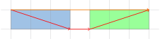
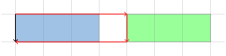

题意
给你一个 \(2\times n\) 的点阵。支持连接两个四连通的点，查询两个点的连通性。
\(n,q\le10^5\)。
解法
真的是神仙题，妙极了。
首先考虑查询。看起来这个查询带了参数，难以维护。
考虑一个神奇的操作：对于查询的两个点 \((x_1,y_1),(x_2,y_2)\quad(y_1\le y_2)\)，我们在数据结构维护每个区间内部的连通性，并查询数据结构中的区间 \([y_1,y_2]\)。
那么可以根据 \(x\) 的取值分成六种情况：左上到右上、左下到右下、左上到左下、右上到右下、左上到右下、左下到右上。即该区间所维护矩形的四条边和两条对角线。
为了方便阅读，变量名分别命名为 qwe zxc qaz edc qsc zse。
定义 \(\texttt{er}_i\) 为 \((1,i)\to(1,i+1)\) 的边是否连接，\(\texttt{cv}_i\) 为 \((2,i)\to(2,i+1)\)，\(\texttt{wsx}\) 为 \((1,i)\to(2,i)\)。
注意到这个标记是有可加性的，考虑用线段树维护。
pushup
首先考虑 qwe 的合并。
注意到从合并后矩形的左上到右上只有两条路，分别如下：
其中蓝色矩形代表左区间，绿色矩形代表右区间。
如图，可以得到 pushup：\(\texttt{qwe}=(L.\texttt{qwe}\land\texttt{er}_{L.r}\land R.\texttt{qwe})\lor(L.\texttt{qsc}\lor\texttt{cv}_{L.R}\lor R.\texttt{zse})\)。其中 \(L.r\) 是左区间的右端点。
zxc qsc zse 的 pushup 同理。具体参考代码。
然后考虑 qaz 的合并。
注意到从合并后矩形的左上到左下也只有两条路，分别如下：
所以也可以得到 pushup：\(\texttt{qaz}=L.\texttt{qaz}\lor(L.\texttt{qwe}\land\texttt{er}_{L.r}\land R.\texttt{qaz}\land\texttt{cv}\land L.\texttt{zxc})\)。其中 \(L.r\) 是左区间的右端点。
zse 的 pushup 同理。
查询
根据上面的分析，我们貌似只需要根据 \(x\) 的取值分成六种情况查询就好了？
然后从人群中钻出了一个神 AThousandSuns，给了你一组数据：
1 | 4 |
WA？？？
这组数据的输出应该是 Y，但是按照上面的分析，只考虑区间 \([y_1,y_2]\) 的答案，会得到 N。
考虑在查询的时候查询三个区间：\([1,y_1],[y_1,y_2],[y_2,n]\)。然后计算答案的时候综合三个区间的答案。具体见代码。
代码
1 |
|